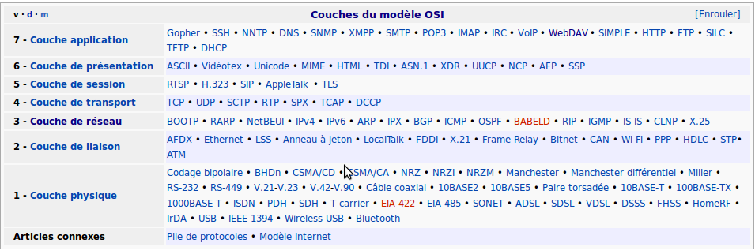

Mise en réseau
dominique huguenin (dominique.huguenin@rpn.ch) -Quelques définitions
modèle TCP/IP - pile de protocoles
| couches réseau |
|---|
| APPLICATION (ftp. http, telnet, ssh) |
| TRANSPORT (tcp, udp) |
| INTERNET (ip) |
| PHYSIQUE |

Paramètres de configuration d’un réseau
Pour plus de détail voir [1] et [2]
- Adresse IP (ip address)
- Masque de réseau (netmask)
- Adresse réseau (Network Address)
- Adresse de diffusion (Broadcast Address)
- Adresse de la passerelle(Gateway Address)
- Notation CIDR
- Adresse de DNS(Nameserver Address)
Outils réseau
Pour plus de détail voir [1]
ping - envoi une requête ICMP à une machine réseau.
PING(8) System Manager's Manual: iputils PING(8)
NAME
ping, ping6 - send ICMP ECHO_REQUEST to network hosts
SYNOPSIS
ping [-LRUbdfnqrvVaAB] [-c count] [-i interval] [-l preload] [-p pat‐
tern] [-s packetsize] [-t ttl] [-w deadline] [-F flowlabel] [-I inter‐
face] [-M hint] [-Q tos] [-S sndbuf] [-T timestamp option] [-W timeout]
[hop ...] destination
$ ping slashdot.org
PING slashdot.org (216.34.181.45) 56(84) bytes of data.
64 bytes from slashdot.org (216.34.181.45): icmp_seq=1 ttl=240 time=142 ms
64 bytes from slashdot.org (216.34.181.45): icmp_seq=2 ttl=240 time=141 ms
64 bytes from slashdot.org (216.34.181.45): icmp_seq=3 ttl=240 time=147 ms
64 bytes from slashdot.org (216.34.181.45): icmp_seq=4 ttl=240 time=142 ms
64 bytes from slashdot.org (216.34.181.45): icmp_seq=5 ttl=240 time=147 ms
^C
--- slashdot.org ping statistics ---
5 packets transmitted, 5 received, 0% packet loss, time 4002ms
rtt min/avg/max/mdev = 141.060/144.416/147.888/2.909 ms
traceroute - affiche la chemin des paquets jusqu’à la machine réseau.
TRACEROUTE(1) Traceroute For Linux TRACEROUTE(1)
NAME
traceroute - print the route packets trace to network host
SYNOPSIS
traceroute [-46dFITUnreAV] [-f first_ttl] [-g gate,...]
[-i device] [-m max_ttl] [-p port] [-s src_addr]
[-q nqueries] [-N squeries] [-t tos]
[-l flow_label] [-w waittime] [-z sendwait]
[-UL] [-P proto] [--sport=port] [-M method] [-O mod_options]
[--mtu] [--back]
host [packet_len]
traceroute6 [options]
lft [options]
$ traceroute slashdot.org
traceroute to slashdot.org (216.34.181.45), 30 hops max, 60 byte packets
1 192.168.122.1 (192.168.122.1) 0.596 ms 0.565 ms 0.554 ms
2 192.168.1.2 (192.168.1.2) 0.978 ms 0.973 ms 1.198 ms
3 133-59.186-195.fws.bluewin.ch (195.186.59.133) 25.665 ms 26.609 ms 27.299 ms
4 210-59.186-195.fws.bluewin.ch (195.186.59.210) 29.283 ms 30.013 ms 30.991 ms
5 193-59.186-195.fws.bluewin.ch (195.186.59.193) 31.980 ms 32.724 ms 33.477 ms
6 tge6-3.zhbia11p-rtdi02.bluewin.ch (213.3.130.53) 34.856 ms 26.699 ms 27.083 ms
7 net1704.zhbdz09p-rtdi02.bluewin.ch (213.3.246.13) 27.822 ms 26.891 ms 27.761 ms
8 if182.ip-plus.bluewin.ch (195.186.0.182) 28.778 ms 29.248 ms 29.990 ms
9 i79tix-025-ten1-1.bb.ip-plus.net (138.187.129.82) 30.750 ms 32.567 ms 32.564 ms
10 te-4-2.car1.Zurich1.Level3.net (213.242.67.65) 33.211 ms 33.702 ms 27.399 ms
11 ae-11-11.car2.Zurich1.Level3.net (4.69.133.234) 28.353 ms 28.972 ms 29.697 ms
12 ae-7-7.ebr2.Frankfurt1.Level3.net (4.69.133.237) 38.021 ms 38.027 ms 35.133 ms
13 ae-45-45.ebr1.Dusseldorf1.Level3.net (4.69.143.165) 37.802 ms
ae-46-46.ebr1.Dusseldorf1.Level3.net (4.69.143.169) 39.738 ms
ae-47-47.ebr1.Dusseldorf1.Level3.net (4.69.143.173) 40.483 ms
14 ae-1-100.ebr2.Dusseldorf1.Level3.net (4.69.141.150) 40.463 ms 41.428 ms
42.398 ms
15 ae-48-48.ebr1.Amsterdam1.Level3.net (4.69.143.209) 45.905 ms
ae-45-45.ebr1.Amsterdam1.Level3.net (4.69.143.197) 46.900 ms
ae-48-48.ebr1.Amsterdam1.Level3.net (4.69.143.209) 46.884 ms
16 ae-1-51.edge4.Amsterdam1.Level3.net (4.69.139.138) 41.327 ms 41.942 ms
42.668 ms
17 acr1-so-3-0-0.Amsterdamamx.savvis.net (208.174.49.1) 45.927 ms 47.128 ms
48.111 ms
18 cr1-pos-0-3-2-0.chicago.savvis.net (204.70.192.101) 176.067 ms 176.049 ms
176.378 ms
19 hr2-tengigabitethernet-12-1.elkgrovech3.savvis.net (204.70.195.122) 148.948 ms
149.332 ms 148.934 ms
20 das3-v3039.ch3.savvis.net (64.37.207.186) 150.877 ms das4-v3042.ch3.savvis.net
(64.37.207.198) 146.463 ms 147.888 ms
21 64.27.160.198 (64.27.160.198) 149.838 ms 140.681 ms 141.284 ms
22 slashdot.org (216.34.181.45) 143.039 ms 143.040 ms 145.011 ms
netstat - Affiche les connexions réseau,…
NETSTAT(8) Linux Programmer's Manual NETSTAT(8)
NAME
netstat - Affiche les connexions réseau, les tables de routage, les
statistiques des interfaces, les connexions masquées, les messages
netlink, et les membres multicast.
SYNOPSIS
netstat [-venaoc] [--tcp|-t] [--udp|-u] [--raw|-w] [--groups|-g]
[--unix|-x] [--inet|--ip] [--ax25] [--ipx] [--netrom]
netstat [-veenc] [--inet] [--ipx] [--netrom] [--ddp] [--ax25]
{--route|-r}
netstat [-veenpac] {--interfaces|-i} [iface]
netstat [-enc] {--masquerade|-M}
netstat [-cn] {--netlink|-N}
netstat {-V|--version} {-h|--help}
$ netstat -ie
Table d'interfaces noyau
eth0 Link encap:Ethernet HWaddr 52:54:00:46:51:93
inet adr:192.168.122.215 Bcast:192.168.122.255 Masque:255.255.255.0
adr inet6: fe80::5054:ff:fe46:5193/64 Scope:Lien
UP BROADCAST RUNNING MULTICAST MTU:1500 Metric:1
Packets reçus:1788 erreurs:0 :0 overruns:0 frame:0
TX packets:854 errors:0 dropped:0 overruns:0 carrier:0
collisions:0 lg file transmission:1000
Octets reçus:287507 (287.5 KB) Octets transmis:311797 (311.7 KB)
lo Link encap:Boucle locale
inet adr:127.0.0.1 Masque:255.0.0.0
adr inet6: ::1/128 Scope:Hôte
UP LOOPBACK RUNNING MTU:16436 Metric:1
Packets reçus:0 erreurs:0 :0 overruns:0 frame:0
TX packets:0 errors:0 dropped:0 overruns:0 carrier:0
collisions:0 lg file transmission:0
Octets reçus:0 (0.0 B) Octets transmis:0 (0.0 B)
$ netstat -r
Table de routage IP du noyau
Destination Passerelle Genmask Indic MSS Fenêtre irtt Iface
192.168.122.0 * 255.255.255.0 U 0 0 0 eth0
default 192.168.122.1 0.0.0.0 UG 0 0 0 eth0
$ netstat -natu
Connexions Internet actives (serveurs et établies)
Proto Recv-Q Send-Q Adresse locale Adresse distante Etat
tcp 0 0 0.0.0.0:22 0.0.0.0:* LISTEN
tcp 0 0 192.168.122.215:22 192.168.122.1:58222 ESTABLISHED
tcp6 0 0 :::22 :::* LISTEN
udp 0 0 0.0.0.0:68 0.0.0.0:*
ifconfig
IFCONFIG(8) Linux Programmer's Manual IFCONFIG(8)
NOM
ifconfig - configure une interface réseau
SYNOPSIS
ifconfig [interface]
ifconfig interface [aftype] options | adresse ...
$ ifconfig
eth0 Link encap:Ethernet HWaddr 52:54:00:46:51:93
inet adr:192.168.122.215 Bcast:192.168.122.255 Masque:255.255.255.0
adr inet6: fe80::5054:ff:fe46:5193/64 Scope:Lien
UP BROADCAST RUNNING MULTICAST MTU:1500 Metric:1
Packets reçus:1916 erreurs:0 :0 overruns:0 frame:0
TX packets:914 errors:0 dropped:0 overruns:0 carrier:0
collisions:0 lg file transmission:1000
Octets reçus:301271 (301.2 KB) Octets transmis:324861 (324.8 KB)
lo Link encap:Boucle locale
inet adr:127.0.0.1 Masque:255.0.0.0
adr inet6: ::1/128 Scope:Hôte
UP LOOPBACK RUNNING MTU:16436 Metric:1
Packets reçus:0 erreurs:0 :0 overruns:0 frame:0
TX packets:0 errors:0 dropped:0 overruns:0 carrier:0
collisions:0 lg file transmission:0
Octets reçus:0 (0.0 B) Octets transmis:0 (0.0 B)
Procédure de détermination de panne de réseau
ping <nom machine>
|
|- ok --> fin
|
|- ifconfig : vérifier si l'interface réseau ok
|
|- eth0 absent : interface réseau non configuré ou pas démarer --> corriger
|- eth0 ok
|
|- vérifier paramettre réseau
| inet adr,masque, bcast
|
|- inet adr, masque n'est pas valide --> corriger
|- inet adr, masque valide
|
|- route -n : vérification des routes présence de la
| passerelle (gateway)
|
|- gateway (passerelle) n'est pas valide --> corriger
|- gateway (passerelle) valide
|
|- dig <nom machine> : vérification de la résolution de nom
|
|-<nom de machine> inconnu
| |
| |-vérifier la configuration DNS
| | cat /etc/resolv.conf
| |
| |- IP DNS incorrect --> corriger
|<-----´
|
|- traceroute <nom machine>
|
|- ko --> corriger
|- ok
|
|- analyseur de réseau ?
Fichiers de configuration réseau
configuration réseau /etc/network/interfaces
Depuis la version Ubuntu 18.04LTS, la configuration se fait à l’aide de l’utilitaire netplan voir Configuration réseau avec netplan
ubuntu@lozan:~$ man interfaces
INTERFACES(5) File formats
INTERFACES(5)
NAME
/etc/network/interfaces - network interface configuration for ifup and ifdown
-
Exemple de configuration
ubuntu@lozan:~$ cat /etc/network/interfaces # This file describes the network interfaces available on your system # and how to activate them. For more information, see interfaces(5). # The loopback network interface auto lo iface lo inet loopback auto eth0 iface eth0 inet static address 157.26.229.93 netmask 255.255.255.0 gateway 157.26.229.1 auto eth1 iface eth1 inet dhcp dns-nameservers 157.26.229.91 157.26.229.92 dns-search labo.dhu s2.rpn.ch rpn.ch cifom.ch
nom de la machine /etc/hostname
ubuntu@lozan:~$ man hostname
HOSTNAME(1) Linux Programmer's Manual HOSTNAME(1)
NAME
hostname - show or set the system's host name
domainname - show or set the system's NIS/YP domain name
ypdomainname - show or set the system's NIS/YP domain name
nisdomainname - show or set the system's NIS/YP domain name
dnsdomainname - show the system's DNS domain name
-
Affiche le nom complet de la machine
ubuntu@lozan:~$ hostname -f lozan.s2.rpn.ch -
fichier contenant le nom de la machine
ubuntu@lozan:~$ cat /etc/hostname lozan
Table de correspondance statique des noms d’hôtes /etc/hosts
ubuntu@lozan:~$ man hosts
HOSTS(5) Manuel du programmeur Linux HOSTS(5)
NOM
hosts - Table de correspondance statique des noms d'hôtes
SYNOPSIS
/etc/hosts
-
Exemple
ubuntu@lozan:~$ cat /etc/hosts 127.0.0.1 localhost 127.0.1.1 lozan.s2.rpn.ch lozan # The following lines are desirable for IPv6 capable hosts ::1 ip6-localhost ip6-loopback fe00::0 ip6-localnet ff00::0 ip6-mcastprefix ff02::1 ip6-allnodes ff02::2 ip6-allrouters
Références
- 16 – Networking, The Linux Commande Line, http://linuxcommand.org/tlcl.php
- Ubuntu Documentation, https://help.ubuntu.com/